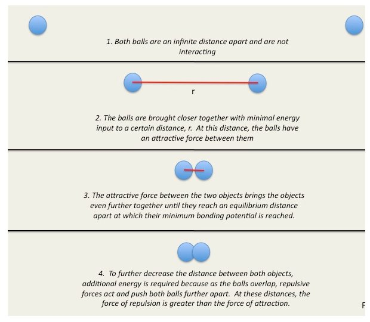
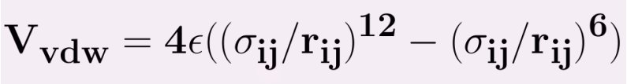
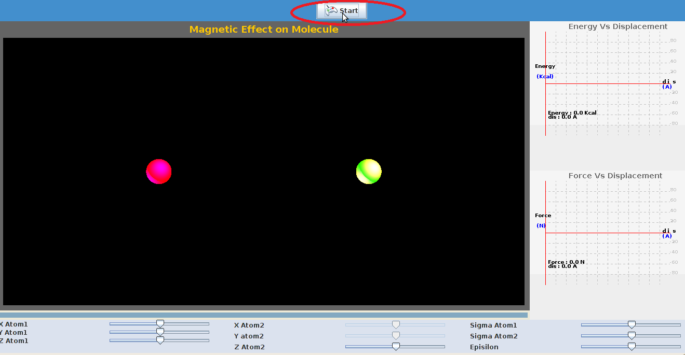
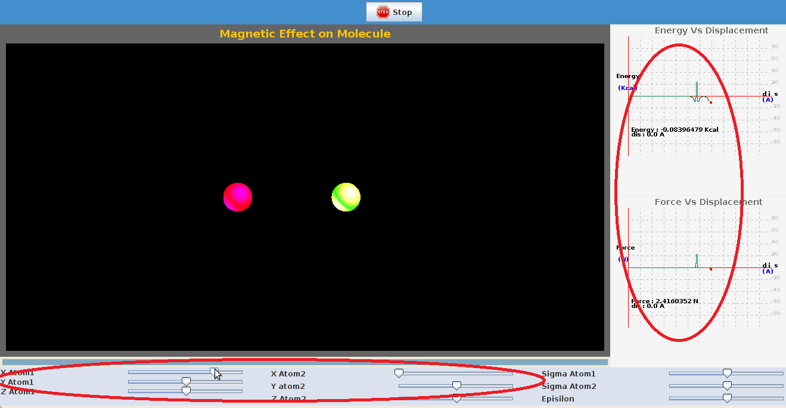
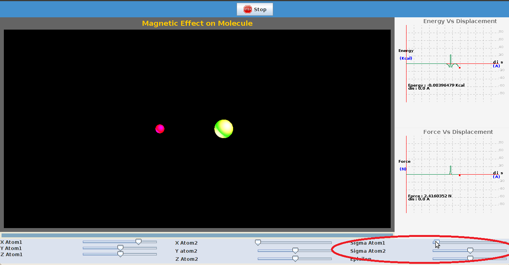

The Lennard-Jones potential is a mathematically simple model that approximates the interaction between a pair of neutral atoms or molecules. A form of the potential was first proposed in 1924 by John Lennard-Jones.This potential is a combination of both the attractive and repulsive part forces present between the atoms. Assuming an atom at the infinite distance approaches the another atom,the energy is zero when they are present at the infinite distance. As the, distance between them decreases energy reaches a minium and then increases rapidly.
The figure below shows what happens when we bring the atoms closer from an infinite distance.we can imagine atoms to be like balls.


The Lennard Jones Potential is common potential used to model VanderWaals interactions which is expressed as follows,
|  |
ε = the minimum (well depth) of the potential for the interaction between atom i and j.
σij = the collision diameter,at which inter particle potential is zero.
rij = the distance between the particles.
The parameters ε,σ is not given for a specific pair and can be found by using Lorentz-berthelot rules,
The term r-12is called repulsive term, observed at short ranges due to overlapping of electron orbitals. The term r-6describes the attraction at long ranges.

To demonstrate Van der Waals interactions between a pair of non bonded atoms.


There are certain parameters to be initialized and the procedure detailed here can be followed.
| STEP 1: Click on 'start' to start the experiment. |
|  |
| STEP 2:The coordinates of particles can be varied by changing the position of sliders,a plot of energy ,force is seen. |
|  |
| STEP 3: Sigma factor for both the particles can be increased or decreased by moving the slider shown below. |
|  |


- Physical Chemistry by P.W.Atkins.
- Intermolecular and Surface Forces by Jacob Israelachivili
- Dynamics of structures by Anil K chopra.
- http://www.stanford.edu/group/blocklab/Optical%20Tweezers%20Introduction.htm
- http://www.biop.dk/Research/Main_research_tweezers.htm
- http://www.ncbi.nlm.nih.gov/pmc/articles/PMC1564163/ http://en.wikipedia.org/wiki/Simple_harmonic_motion
- http://www.physics.uoguelph.ca/tutorials/shm/Q.shm.html
- http://surendranath.tripod.com/Applets/Oscillations/SHM/SHMApplet.html